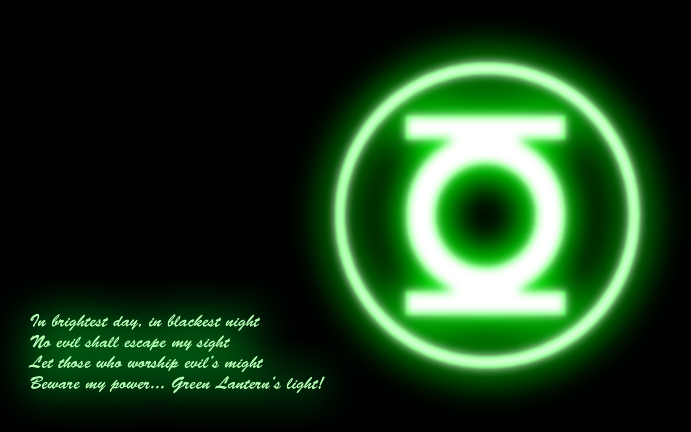

Guitar Eyes
A web-based app that will read guitar and bass tablature to visually impaired musicians, in a format that is styled to mimic how a person with sight would perceive the information.
View on GitHubHello, my name is Jason Washburn. I am 53 years old. I have been with Liberty Mutual for almost 25 years. I have, mainly, worked in the claims contact center for the duration of my time with the company, but a couple of years ago, I had the pleasure of working with a great team of developers; helping them to create, what is now Liberty Mutual’s “Digital Accessibility Center”. Working with these great people, ignited a real passion, in me, to pursue a career in application engineering and development.
A web-based app that will read guitar and bass tablature to visually impaired musicians, in a format that is styled to mimic how a person with sight would perceive the information.
View on GitHubA companion app for Guitar Eyes.
View on GitHubAn app to extract text from .pdf files that are not formatted for screen readers.
View on GitHubAn app to create ‘backtracks’ out of existing .mp3 files for guitarist to play along with their favorite songs. The app also creates a “click track” at the beginning of the song, so the player can know when to start playing.
View on GitHub